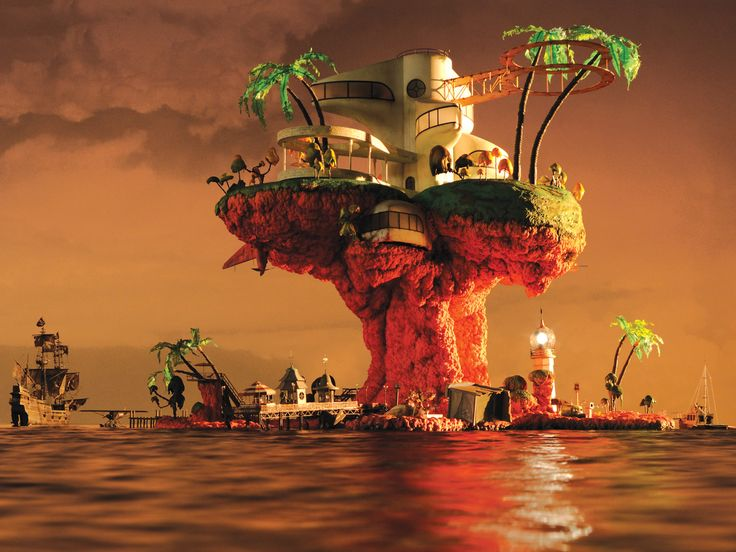

La historia de Gorillaz comienza en 1997, cuando Murdoc Niccals, un delincuente con aspiraciones musicales, asalta una tienda de órganos y deja en coma a Stuart Pot. Más tarde, lo vuelve a atropellar accidentalmente, provocándole daños en el otro ojo, lo que lleva a que lo reclute para su banda como vocalista y teclista bajo el nombre de 2-D.
Murdoc adquiere un estudio embrujado llamado Kong Studios en Essex como sede del grupo. Luego conoce a Russel Hobbs, un baterista poseído por espíritus de amigos asesinados, lo secuestra y lo convence de unirse a la banda. La primera guitarrista fue Paula Cracker, novia de 2-D.
Tras descubrir una traición entre Paula y Murdoc, Russel expulsa a Paula. Poco después, reciben un paquete desde Japón con una niña guitarrista prodigio llamada Noodle, quien se une a la banda. A partir de entonces, cambian su nombre a Gorillaz y graban su primera canción, “Ghost Train”. Gorillaz realiza su primer show en noviembre de 1998, que termina en caos. Aun así, firman con EMI y conocen a Damon Albarn, quien se convierte en una figura clave. Murdoc, celoso, intenta constantemente sabotearlo. En 2000 lanzan su primer EP, Tomorrow Comes Today.
El primer álbum Gorillaz aparece en 2001, destacando los sencillos “Clint Eastwood”, “19-2000” y otros. Se lanza un falso documental llamado Charts of Darkness. En 2001 también publican “911”, colaboración con D12 y Terry Hall, y el compilado G Sides. En 2002, lanzan el álbum de remezclas Laika Come Home y el DVD oficial de la Primera Fase. Circulan rumores de una película de Gorillaz, pero se cancela por falta de interés de Hewlett en los estudios de Hollywood. La banda se disuelve temporalmente. Durante la pausa, Murdoc es arrestado en México, 2-D trabaja en un parque de atracciones y Russel desaparece buscando exorcizar sus demonios, incluido el espíritu de Del. Noodle viaja a Japón y descubre su origen como sujeto de un experimento militar.
Noodle regresa a Kong Studios y escribe el álbum Demon Days. La banda se reúne para grabarlo. Murdoc trama el asesinato de Noodle con ayuda de Jimmy Manson, pero ella sobrevive al ataque del video “El Mañana”, mientras Jimmy muere, y la banda se separa otra vez creyendo que ella está muerta. Aunque Noodle fue dada por muerta, luego se revela que sobrevivió con un paracaídas. Durante años, Murdoc da versiones contradictorias sobre su destino hasta que en 2013 confirma que fue rescatada. Tras cuatro años de ausencia, los miembros de Gorillaz estaban dispersos: Murdoc terminó secuestrando a 2D para llevarlo a Plastic Beach, mientras Noodle reapareció con una máscara en un barco lleno de contrabandistas, y Russel se mostraba en forma gigante. Con el lanzamiento del álbum Plastic Beach, surgieron nuevos sencillos como “Stylo”, “Broken” y “Electric Shock”, así como un videojuego promocional.
A finales de 2010, Cass Browne anunció un ambicioso proyecto llamado The Sinking of Plastic Beach, un libro que incluiría entrevistas, ilustraciones y detalles sobre el universo del álbum. Sin embargo, el proyecto fue cancelado por falta de recursos, quedando como uno de los muchos conceptos no concretados del extenso y misterioso mundo de Gorillaz.
Así concluye la primera gran etapa de Gorillaz, marcada por caos, música y misticismo. Durante este periodo la banda concreto cinco albumes que alcanzaron el exito poco después de su salida, trayendole gran prestigio a la banda, además de consolidar una identidad y un estilo fresco e interesante con millones de fans en todo el mundo.
